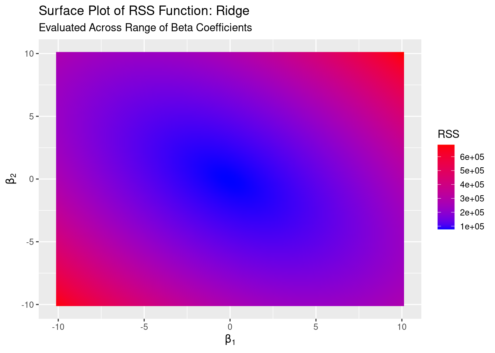

Ridge Regression
This example walks through fitting a ridge regression model to idealized data. We assume some prior knowledge of ordinary least squares and linear algebra.
Though not included in the code snippets, this example uses the tidyverse, MASS, latex2exp, ggcorrplot, and RColorBrewer packages.
Overview
Ridge regression may be preferable to OLS if
- there are a lot of independent variables/predictors to choose from and
- some of those predictors are highly correlated with one another.
Ridge regression is, functionally, nearly the same as OLS except that we include a constraint on the \(\hat{\beta}\) vector in fitting the model. Constraining a model in this way is broadly called regularization and makes the model less complex by either eliminating or penalizing low-contribution variables. In ridge regression, the particular form of regularization/constraint we use acts as a sum-of-squares (or a L2) penalty and shrinks rather than eliminates variables.
Ridge regression may have higher prediction accuracy than OLS due to OLS overfitting the training sample. It can be easily shown that OLS estimates, under certain assumptions, are unbiased and have the lowest possible variance of unbiased estimators. However, we can oftentimes get an even lower variance of the fitted values by allowing our estimates to be biased. This is usually not desirable if the goal of the model is inference, but we likely don’t care as much if the goal is prediction. This can help improve model accuracy.
Ridge regression also performs a kind of variable selection by more severely penalizing estimates of variables that contribute less to the overall variance of the fitted values. So long as the penalty term in ridge regression is greater than zero it will shrink all regression coefficients toward zero but it will shrink those with larger projected sample variance less. Ridge regression cannot set coefficients to exactly zero, though, so it doesn’t actually perform full variable selection.
Theory
Just like in OLS, the intent is to minimize residual sum of squares.
Minimizing RSS: OLS
Before jumping into ridge regression, let’s review deriving the OLS solution via minimizing RSS. Where \(X\) is our design matrix:
\[\vec{\beta} = \{ \beta_0, \beta_1, \ldots, \beta_k \}\]
\[\begin{align*} RSS(\vec{\beta})_{OLS} &= (\vec{y} - X \vec{\beta})^T(\vec{y} - X \vec{\beta}) \\ &= \vec{y}^T \vec{y} - \underbrace{\vec{y}^T X \vec{\beta}}_{\vec{\beta}^T X^T \vec{y}} - \vec{\beta}^T X^T \vec{y} + \vec{\beta}^T X^T X \vec{\beta} \\ &= \vec{y}^T \vec{y} - 2 \vec{\beta}^T X^T \vec{y} + \vec{\beta}^T X^T X \vec{\beta} \end{align*}\]Then minimizing1 \(RSS(\vec{\beta})\) with respect to \(\vec{\beta}\)
we get the normal equation along the way and arrive at the usual solution.
Minimizing RSS: Ridge
The ridge minimization of RSS works the same way, except we include the penalty term (\(\lambda\)) on the squared values of our estimates.
However, the penalty does not apply to the intercept term, so we will use a matrix of just our variables without a leading one-vector for the intercept term (which I will call the input matrix). It’s easy to conceptualize how the ridge regression solutions for the non-intercept terms would depend on the intercept if we also penalized it. If the column vectors of \(X\) are mean-centered then \(\beta_0 = \bar{y}\). Then we minimize RSS with the penalty term as if there were no intercept.
\[\vec{\beta} = \{ \beta_1, \beta_2 \ldots, \beta_k \}\]
\[\begin{align*} RSS(\vec{\beta})_{Ridge} &= (\vec{y} - X \vec{\beta})^T(\vec{y} - X \vec{\beta}) + \lambda \vec{\beta}^T \vec{\beta} \\ &= \vec{y}^T \vec{y} - \underbrace{\vec{y}^T X \vec{\beta}}_{\vec{\beta}^T X^T \vec{y}} - \vec{\beta}^T X^T \vec{y} + \vec{\beta}^T X^T X \vec{\beta} + \lambda \vec{\beta}^T \vec{\beta} \\ &= \vec{y}^T \vec{y} - 2 \vec{\beta}^T X^T \vec{y} + \vec{\beta}^T X^T X \vec{\beta} + \lambda \vec{\beta}^T \vec{\beta} \end{align*}\]Then minimize with respect to \(\vec{\beta}\):
Notice that for \(\lambda = 0\) our minimization is the same as with OLS, so a ridge regression fit with \(\lambda = 0\) is just an OLS fit. In calculating MSE we will need to add \(\beta_0 = \bar{y}\) in so long as we’re concerned about being off by a constant.
Important Features
This section is not strictly necessary and may be skipped, but know that
- the ridge regression problem will never not have a solution because of rank-deficiency or linearly dependent variables and
- ridge regression performs a type of variable selection by shrinking variables that contribute less to the variance of fitted values more.2
Solvability
Because we add a positive constant, \(\lambda I\), to the diagonal of \(X^T X\) prior to inverting that matrix the resulting adjusted matrix will always be nonsingular. So there will always be a solution, even if \(X^T X\) is rank-deficient. This is not the case with OLS: ridge regression can provide solutions to least squares-like problems where OLS cannot.3 This may be useful if two or more variables are linearly dependent or are very highly correlated or if there are more variables than observations.
(Sort Of) Variable Selection
It’s also important to note that ridge regression shrinks all estimates toward zero, but it does not shrink them equally.4 Ridge regression shrinks the variables that contribute more variation to the fitted (or predicted) values less than those variables that don’t: in this way, it performs a kind of variable selection.
To demonstrate this, we can take the singular value decomposition of the mean-centered input matrix.5
Like with all SVDs, the \(D\) matrix is diagonal and contains the singular values (which are associated with principal components) of \(X\) along its diagonal in descending order.
We can take this decomposition of \(X\) and plug it into our hat matrix formula
where \(U^T U = I\) because \(U\) is symmetric, \(V^T V^{-1} (V^T)^{-1} V = I\) because \(V\) is unitary, and \(D^T = D\) because \(D\) is diagonal and therefore also symmetric.
If we focus on the above expression in terms of individual vectors of \(U\) and individual diagonal elements of \(D\) it’s easy to see that
where \(K\) is the number of variables, \(u_k\) is the \(k\)th column of \(U\) (or the \(k\)th left singular vector), and \(\sigma_k\) is the \(k\)th singular value. A hat matrix is simply a projection of \(X\) onto the column space of \(\vec{y}\), so it is clear to see here that the fraction is the penalty in that projection. It’s also clear to see that, because the singular values are decreasing along the diagonal of \(D\) (i.e., \(\sigma_1 > \sigma_2, \ldots, > \sigma_K\)), this penalty grows larger for basis vectors associated with smaller singular values: i.e., ridge regression more heavily shrinks the estimated “effect” of variables with smaller sample variance.
Case 1: Linearly Dependent Variables
First we’ll explore a simple case demonstrating how ridge regression can solve problems with linearly dependent variables when OLS can’t. This is just a particular case of rank-deficiency, the other one that can cause issues with OLS being having more variables (columns) than observations (rows) in your design matrix. Ridge regression can handle both cases.
Data Generation
We’ll create one normally-distributed variable and then a second variable that is simply a multiple of the first to make the two variables linearly dependent.
Let’s generate one variable with 1,000 observations, a mean between -10 and 10, and a standard deviation between 1 and 10.
X1 <- rnorm(1000, mean = runif(1, -10, 10), sd = runif(1, 1, 10))We’ll make X1 linearly dependent with a new variable, X2, by making X2 a variable that is simply X1 divided by two.
X2 <- X1 / 2Next we’ll write a standardization function6 and standardize both of our variables.
standardize <- function(vec){
sd <- sqrt(sum((vec - mean(vec))^2) / length(vec))
(vec - mean(vec)) / sd
}
X1_std <- standardize(X1)
X2_std <- standardize(X2)Lastly we’ll create a normally-distributed outcome variable.
y <- rnorm(1000, mean = runif(1, -10, 10), sd = runif(1, 1, 10))The Problem: OLS
Let’s run a simple linear regression and see what happens:
summary(lm(y ~ X1_std + X2_std))##
## Call:
## lm(formula = y ~ X1_std + X2_std)
##
## Residuals:
## Min 1Q Median 3Q Max
## -30.1499 -5.6836 0.4354 5.6832 28.6309
##
## Coefficients: (1 not defined because of singularities)
## Estimate Std. Error t value Pr(>|t|)
## (Intercept) -1.5330 0.2745 -5.584 3.03e-08 ***
## X1_std -0.1944 0.2745 -0.708 0.479
## X2_std NA NA NA NA
## ---
## Signif. codes: 0 '***' 0.001 '**' 0.01 '*' 0.05 '.' 0.1 ' ' 1
##
## Residual standard error: 8.681 on 998 degrees of freedom
## Multiple R-squared: 0.0005024, Adjusted R-squared: -0.0004991
## F-statistic: 0.5016 on 1 and 998 DF, p-value: 0.4789As expected, R notes that our matrix is singular and returns NA for the X2 estimate.
But why is this? The objective of OLS is to minimize RSS, but clearly that’s not happening here. So let’s start there: we can evaluate the RSS function from the theory section over combinations of \(\beta_1\) and \(\beta_2\) values to take a look at the RSS surface.7.
Let’s build our RSS function.
RSS_OLS <- function(b_vec){
t(y) %*% y - 2 * t(b_vec) %*% t(design_matrix) %*% y + t(b_vec) %*% t(design_matrix) %*% design_matrix %*% b_vec
}Then we can create a dataset of \(\beta_1\) and \(\beta_2\) combinations and apply our function to it in order to evaluate the log likelihood functions for those \(\beta\) values.
b1_vec <- seq(-10, 10, .25)
b2_vec <- seq(-10, 10, .25)
surface <- bind_cols(mean(y), expand_grid(b1_vec, b2_vec))
design_matrix <- model.matrix(y ~ X1_std + X2_std)
surface$rss_ols <- apply(surface, MARGIN = 1, RSS_OLS)So what does our log-likelihood surface look like in this case?
rss_ols_surface_plot <- ggplot(surface, aes(x = b1_vec, y = b2_vec, fill = rss_ols)) +
geom_raster(interpolate = TRUE) +
scale_fill_gradient(name = "RSS", high = 'red', low = 'blue') +
labs(title = "Surface Plot of RSS Function: OLS",
subtitle = "Evaluated Across Range of Beta Coefficients",
x = TeX("$\\beta_1$"),
y = TeX("$\\beta_2$"))
There’s a long valley! Clearly there’s not a unique minimum here: there are many combinations of \(\beta_1\) and \(\beta_2\) that could minimize RSS, so there is no unique solution with OLS! The valley in the RSS function corresponds to a ridge in the maximum likelihood surface.
A Solution: Ridge Regression
So how does ridge regression fix this optimization problem? By penalizing (or regularizing) our function!
Ideally we would choose our penalty term, \(\lambda\), optimally by cross-validating but we’ll arbitrarily set \(\lambda = 1,000\) here to illustrate how ridge regression changes the RSS surface. Following the steps for evaluating the OLS RSS, we’ll create our ridge RSS function.
RSS_ridge <- function(b_vec){
lambda <- 1000
t(y) %*% y - 2 * t(b_vec) %*% t(input_matrix) %*% y + t(b_vec) %*% t(input_matrix) %*% input_matrix %*% b_vec + lambda * t(b_vec) %*% b_vec
}As noted in the theory section, we do not penalize the intercept. So we will create an input matrix that only has our X1 and X2 variable values.
input_matrix <- cbind(X1_std, X2_std)
surface$rss_ridge <- apply(surface[2:3], MARGIN = 1, RSS_ridge)So what does our log-likelihood surface look like now?
rss_ridge_surface_plot <- ggplot(surface, aes(x = b1_vec, y = b2_vec, fill = rss_ridge)) +
geom_raster(interpolate = TRUE) +
scale_fill_gradient(name = "RSS", high = 'red', low = 'blue') +
labs(title = "Surface Plot of RSS Function: Ridge",
subtitle = "Evaluated Across Range of Beta Coefficients",
x = TeX("$\\beta_1$"),
y = TeX("$\\beta_2$"))
This looks much more like a surface with a unique minimum! Adding the L2 penalty “lifts” up the ends of the long valley in the RSS surface to create a bowl, for which we can easily identify and solve for a unique minimum. This also makes it easy to see how this penalization pushes or shrinks our coefficients toward zero.
With OLS, we allow the least-squares solving process infinite space within which to find a unique solution, but this fails when we have a canyon in the RSS surface without a unique minimum. By applying the L2 constraint in the ridge regression definition of the problem we are restricting the solution space and forcing the solving process to find the best \(\beta_1\) and \(\beta_2\) that minimize RSS within that space. Residuals are a function of our \(\beta\)s, so this allows for residuals to be higher for some observations than they would be under OLS, which is evidenced by the “lifting” of the RSS surface above.
Choosing how much much space to allow (i.e., which value to use for \(\lambda\)) is another optimization problem that is context-dependent and usually addressed with cross-validation.
Solving for \(\hat{\beta}^{Ridge}\)
We can easily implement the \(\hat{\beta}^{Ridge}\) solution derived in the theory section. Let’s write a function, b_ridge, to solve for the ridge regression coefficients and use it to solve our ridge regression problem.
input_matrix <- cbind(X1_std, X2_std)
lambda <- 1000
b_ridge <- function(y_vec, X_matrix, lambda){
penalty <- lambda * diag(1, ncol(X_matrix))
solve(t(X_matrix) %*% X_matrix + penalty) %*% t(X_matrix) %*% y_vec
}
b_vec_ridge <- b_ridge(y_vec = y, X_matrix = input_matrix, lambda = lambda)## [,1]
## X1_std -0.06481131
## X2_std -0.06481131In this case, because our standardized variables are identical, our ridge regression coefficients are identical.
Standardization
Why did we standardize our independent variables in the cases above? Because the ridge regression solutions will change depending on the scales of the variables. In reality, this may be because of differences in units between variables (e.g., a dataset with temperatures, distances, monetary values measured in whole amounts or 1000s, etc.). Standardizing puts our variables on the same scale.
OLS does not have this problem: it will find the same solution for the same data, scaled or not. To illustrate the point, let’s generate samples of two independently normally distributed variables as well as versions of those variables scaled or multiplied by 1000.
y <- rnorm(1000, mean = 0, sd = 1)
X1 <- rnorm(1000, mean = runif(1, -10, 10), sd = runif(1, 1, 5))
X2 <- rnorm(1000, mean = runif(1, -10, 10), sd = runif(1, 5, 10))
X1_scaled <- X1 * 1000
X2_scaled <- X2 * 1000Fitting a simple linear model, we can easily see that the model produces a scaled version of the non-scaled fit using the scaled data.
lm(y ~ X1 + X2)$coefficients## (Intercept) X1 X2
## 0.0028490455 0.0008614173 -0.0004059253lm(y ~ X1_scaled + X2_scaled)$coefficients## (Intercept) X1_scaled X2_scaled
## 2.849046e-03 8.614173e-07 -4.059253e-07But we won’t get identical solutions if we fit both versions of the data using ridge regression for any \(\lambda > 0\). The estimated effects of the independent variables on the outcome fundamentally change, not simply by the magnitude of the change in scale.
b_ridge(y = y, X = cbind(X1, X2), lambda = 1)## [,1]
## X1 0.0006093192
## X2 -0.0005133182b_ridge(y = y, X = cbind(X1_scaled, X2_scaled), lambda = 1)## [,1]
## X1_scaled 6.093346e-07
## X2_scaled -5.133349e-07In other words, OLS solutions are equivariant to scaling but ridge solutions aren’t. Standardizing the data removes scaling for comparability.
Of course, we lose some interpretability in the need to standardize our data and it means that we must input standardized test data into our ridge model for prediction (rather than raw data). glmnet, the most prominent implementation of ridge regression in R, implements ridge regression in a different way than presented here: it standardizes the data within the function (so that data don’t need to be standardized prior to the call) and then produces de-standardized regression coefficients that can be used with raw, non-standardized test data for prediction. See the glmnet vignette for details. tidymodels and parsnip use glmnet to implement regularized regression.
Recall that \(\frac{\partial a^T b a}{\partial a} = 2 a x\) and \(\frac{\partial a^T b}{\partial a} = a\).↩︎
It can be easy to think that this means the “less important” variables which don’t “explain” our outcome are being shrunk more, but the reason why these variables are shrunk actually has nothing to do with the outcome. Remember that we’re going for prediction here, not inference. So while it might not be true that the variables with higher variance “explain” our outcome, we don’t really care since the goal isn’t causally explaining the outcome. Elements of Statistical Learning explains this well: “The implicit assumption is that the response will tend to vary most in the directions of high variance of the inputs. This is often a reasonable assumption, since predictors are often chosen for study because they vary with the response variable, but need not hold in general.”↩︎
It would be pretty useless if it did shrink all variables equally!↩︎
Remember, this is just our matrix of variable values, not including the one-vector that would be in the design matrix for the intercept.↩︎
Why not use
scale? Bothscaleandsduse Bessel’s correction to calculate the sample standard deviation. We instead use the population standard deviation.glmnet, the primary ridge regression implementation in R, uses the population standard deviation when standardizing variables.↩︎This is almost identical to what we do in the univariate binary logistic case with the maximum likelihood function.↩︎
corcalculates Pearson’s correlation by default.↩︎If you’re unfamiliar with PCA, see this excellent intuitive explanation.↩︎
If this is unfamiliar, for now just think of this as a measure of how much a direction of a principal component is associated with the existing directions of the variables in the hyperplanar space occupied by the data.↩︎